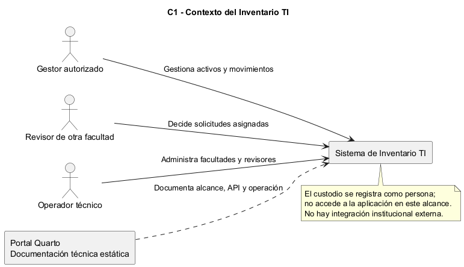
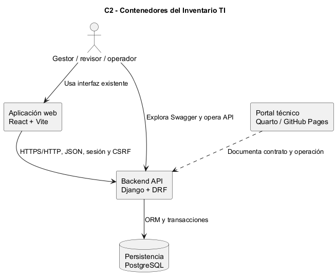
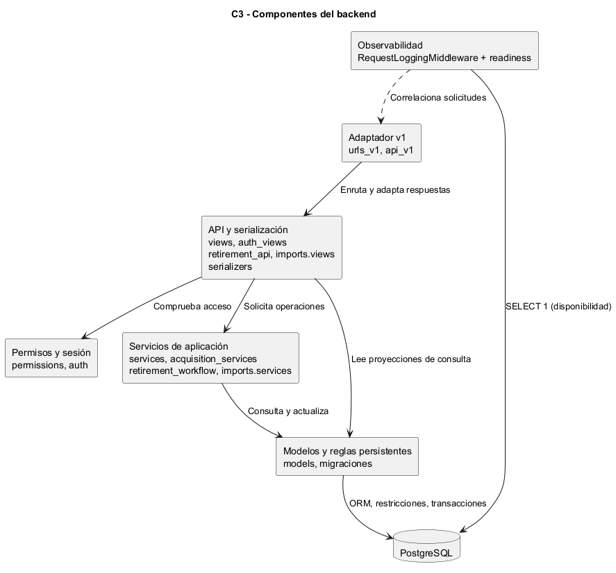
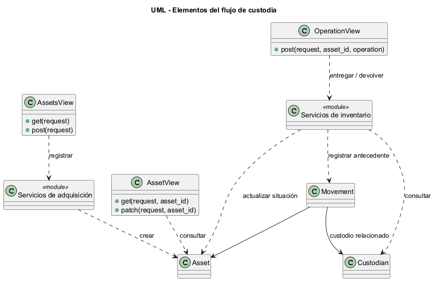

Arquitectura y decisiones
C1: contexto

C2: contenedores

React/Vite es la interfaz existente, ejecutada aparte. Compose contiene Django/Gunicorn y PostgreSQL. Quarto es estático y no recibe credenciales ni almacena inventario. HTTP se limita al loopback; exposición externa requiere TLS/endurecimiento.
C3: componentes

Vistas/serializadores comprueban entradas/permisos; servicios aplican reglas en transacciones; modelos/restricciones conservan integridad. V1 comparte esas capas. Observabilidad registra solicitudes sin copiar sus datos.
C4/código: UML del flujo principal

Mostramos vistas, módulos de servicio y entidades participantes, no solo tablas. Los módulos adicionales se detallan en C3/especificaciones.
Decisión de consolidación
ADR-0901 - Contrato completo, portal y observabilidad
Estado: implementación local conforme a respuestas de Steven del 06/11/2026. Base: develop b60f52f. Ámbito: consolidación de Unidad 1.
Contexto
El backend integra 002-008. La API v1 de semana 3 cubría diez patrones del flujo principal; otros módulos usaban /api/. La evaluación requiere contrato uniforme, Quarto, BPMN y observabilidad. No se amplía el negocio.
Decisión
- Compartir vistas, permisos, serializadores y servicios en /api/v1/; conservar /api/ y sus representaciones. Incorporar en v1 la edición descriptiva auditada ya existente.
- Construir OpenAPI 3.1 desde tipos DRF y un registro explícito de operaciones; probar cobertura exacta. Versión documental 1.1.0 por ampliación compatible.
- Envolver JSON v1 con success/message/data/errors/meta. Documentar SVG/CSV y HEAD/204/304 como excepciones de protocolo/archivo.
- Registrar request_id aleatorio, plantilla de ruta, método, estado y duración; excluir cuerpos, query strings, cookies y credenciales. Mantener auditoría de negocio en PostgreSQL.
- Añadir /health/ready/ público con SELECT 1 y fallo 503 genérico. Docker lo usa sin publicar configuración ni datos.
- Ejecutar pruebas con pytest/pytest-django en etapa Docker separada; conservar manage.py test y excluir dependencias de pruebas del runtime.
- Generar Quarto estático y publicar manualmente HTML desde fuentes de develop hacia gh-pages, después de revisar; mantener main intacta. Pages no aloja Django/PostgreSQL.
- Preparar CI de pruebas, migraciones, artefactos y portal; comprobar su ejecución remota después de subir, sin presentar pruebas locales como Actions ejecutado.
Consecuencias y alternativas
Compartir adaptadores evita divergencias; derivar tipos reduce duplicación, pero las reglas entre campos y respuestas compuestas requieren anotación y pruebas. Crear otra API con reglas propias aumentaría inconsistencias.
Conservar sesión Django mantiene CSRF y expiración absoluta de treinta minutos. No añadimos JWT solo por llamar “tokenización” al requisito. La actualización visual existente continúa por sondeo cada cinco segundos, sin renovar sesión. Producción pública, métricas externas y WebSocket ampliarían el alcance.
Los contratos/figuras de semanas anteriores son evidencias históricas. El contrato vigente de consolidación es docs/producto-final/openapi.json, generado desde inventory.openapi_contract.